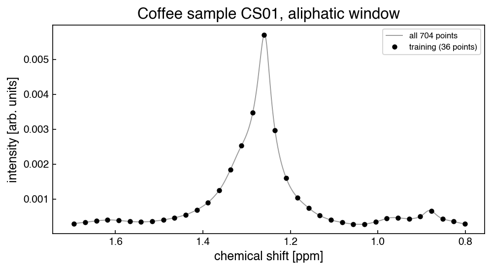

Problems: Complexity Optimization#
Get this problem set
Download everything (Topic2.3-Complexity_Optimization_Problems.zip) — the notebook and
coffee_nmr.csv, in a folder that is ready to run as-is.
The Download badge at the top of the page will also give you the notebook on its own. On Vocareum everything is already set up for you.
Before you start
This problem set accompanies Complexity Optimization. It is worth 100 points:
Part A — Skill Checks (30 pts) — short answers, auto-graded, resubmit as often as you like until they pass.
Part B — Visualization (35 pts) — plots plus written interpretation, peer graded.
Part C — Open Ended (35 pts) — one synthesis problem, peer graded.
The parts build on each other: Part A works out the syntax you need for Part B, and Part B produces the evidence you argue from in Part C. Do them in order.
Setup#
NMR spectra take time to collect, and the finer the resolution the longer the measurement runs. So it is fair to ask how much of a spectrum you actually need. If we kept only every twentieth point, could we rebuild the rest? That is a regression problem, and how well it works depends on choosing the right model complexity.
The data here are proton NMR spectra of the lipophilic extract of ground roast Arabica coffee. This is the fraction that holds the lipids and fatty acids, and food chemists use it to tell one coffee from another. The measurements come from Gunning et al., Food Chemistry 248, 52 (2018), doi:10.1016/j.foodchem.2017.12.034.
The file holds one window, 0.80 to 1.70 ppm, sampled at 704 points, for three coffee samples. This window was chosen because the peaks in it differ so much in height: there is a large methylene peak near 1.26 ppm and several much smaller ones beside it. A single kernel width has to cover both, which is what makes the complexity choice matter here.
%matplotlib inline
import numpy as np
import pandas as pd
import matplotlib.pyplot as plt
from sklearn.kernel_ridge import KernelRidge
from sklearn.linear_model import LinearRegression
from sklearn.metrics import r2_score
try:
plt.style.use('../settings/plot_style.mplstyle') # available inside the book
except OSError:
pass # downloaded notebook: use defaults
df = pd.read_csv('data/coffee_nmr.csv')
shift = df['shift_ppm'].values
y = df['CS01'].values
X = shift.reshape(-1, 1) # scikit-learn wants one column, not one row
n = len(shift)
# The split is written as a rule about the index, not as a slice, because Part C needs
# three training sets that nest inside one another and that is easier to see this way.
i_test = np.array([i for i in range(n) if i % 10 != 0]) # 633 pts, never trained on
i_train = np.array([i for i in range(n) if i % 20 == 0]) # 36 pts, Parts A and B
print(f"{n} points, {shift.min():.4f} to {shift.max():.4f} ppm, "
f"spacing {shift[1] - shift[0]:.5f} ppm")
print(f"training set {len(i_train)} points, spacing {shift[20] - shift[0]:.4f} ppm")
print(f"test set {len(i_test)} points")
704 points, 0.8004 to 1.6988 ppm, spacing 0.00128 ppm
training set 36 points, spacing 0.0256 ppm
test set 633 points
Note
One test set, three training sets. Part C trains on every 10th, every 20th and every
40th point. These three sets are nested: every 40th point is also every 20th, and every 20th
is also every 10th. So we reserve every index divisible by 10, and i_test is the 633 points
left over. Using one fixed test set for all of them is what lets you compare Part C’s three
rows directly. If each density were scored against its own leftovers, the three numbers would
come from three different test sets and could not be lined up.
Nothing here uses train_test_split. The split is deterministic, so there is no
random_state anywhere and none of your answers depend on a seed.
fig, ax = plt.subplots(figsize=(7, 4))
ax.plot(shift, y, '-', lw=0.9, color='0.6', label='all 704 points')
ax.plot(shift[i_train], y[i_train], 'ko', ms=4, label=f'training ({len(i_train)} points)')
ax.set_xlabel('chemical shift [ppm]')
ax.set_ylabel('intensity [arb. units]')
ax.set_title('Coffee sample CS01, aliphatic window')
ax.invert_xaxis() # NMR spectra are drawn with shift decreasing
ax.legend(fontsize=8);

The model throughout is kernel ridge regression with the radial basis function kernel, as in the chapter:
It has two hyperparameters, and this problem set is about choosing them:
\(\sigma\), the kernel width, in ppm — how far one measurement’s influence reaches.
\(\alpha\), the regularization strength — how strongly large coefficients are penalized.
In scikit-learn this is KernelRidge(kernel='rbf', alpha=alpha, gamma=gamma). Note that it
takes \(\gamma\) rather than \(\sigma\), so converting between the two is the first thing to get
right.
Run this once. It defines the check helper used after each Part A answer. It will
not run inside the book — use the downloaded notebook.
# Run this once. It defines `check`, used after each Part A answer below.
import hashlib
_EXPECTED = {
'q1': (7, ['98bc529e03cf', 'd3d417e465e8', '58b464af71ce', '9a606e68e5b7', '47901bd675f8', '8cc2a2ff00ce', 'd9088a3e2036', 'a476e07923da', '70cf47ddf33b', '3b36c3b24b1e', '9b8563f27aa3']),
'q2': (4, ['6fba6daf702e', '2f0456c6a967', 'ff42fd7b8660', '9dd841b19e85', 'e0af7d47fb6d', 'a01d90511560', 'e132dc961afa', '8da57ece22cb', 'f9d42113a005', 'e22d118b4199', '7a6360713029']),
'q3': (6, ['bde167485f11', '835434230103', '5403115ab6ff', 'a4853cac7d1a', '3a98ce353e50', '5665f9f3eee1', '3d8ea8a5c89b', '3e0549477122', 'b9e88dbb5a17', '6dea55f19c07', '952bcb21b556', '6b4111d39aa6', '33517f0d5088', 'b55f2aa6e20c', '673f026a51b7', 'fa90b332e2ef', '55ab4977c932', 'eeb890cbfdb5', 'ac4d3319b7b5', '0541c2f27bdb', '9a10e6521459']),
}
def check(qid, value):
"""Compare an answer against a stored digest. Practice only -- nothing is recorded."""
places, digests = _EXPECTED[qid]
if value is Ellipsis:
print(f"{qid}: not answered yet")
return
got = hashlib.sha256(f"{float(value):.{places}f}".encode()).hexdigest()[:12]
print(f"{qid}: {'correct' if got in digests else 'not the expected value'}")
Part A — Skill Checks (30 pts)#
Three questions, 10 points each. Each asks you to assign a single number to a named variable. Run the check cell after each one; there is no limit on attempts.
All three train on i_train, the 36-point subsample; A2 and A3 score on i_test. A1 fixes
both hyperparameters, A2 changes one to see what it costs, and A3 searches for the best pair.
A1. Fit the model and predict between two measurements (10 pts)#
Exercise 1
Fit KernelRidge with the RBF kernel to the 36 training points, using
remembering that the constructor takes \(\gamma = 1/(2\sigma^2)\) rather than \(\sigma\).
Then predict the intensity at a chemical shift of 1.25 ppm. This is not one of the 704 measured points, and it sits about 0.010 ppm from the nearest training point, on the side of the large peak where the curve is steepest.
Assign the prediction to y_pred.
# YOUR CODE HERE
y_pred = ...
check("q1", y_pred)
A2. Narrow the kernel and score it honestly (10 pts)#
Exercise 2
Now change one thing. Refit the same model on the same 36 training points with
a kernel four times narrower than A1’s.
Report the \(r^2\) of this model on the test set, i_test — the 633 points it was not
trained on. Use r2_score, or the model’s own .score().
Assign it to r2_test_narrow.
Compute the \(r^2\) on the training points as well and keep both numbers handy. The training value is not graded, but you will need it in Part B, and the relationship between the two is what this problem set is about.
# YOUR CODE HERE
r2_test_narrow = ...
check("q2", r2_test_narrow)
A3. Search both hyperparameters (10 pts)#
Exercise 3
A1 and A2 each fixed both hyperparameters by hand. Now search. Over the grid
sigmas = [0.005, 0.01, 0.02, 0.04, 0.08]
alphas = [1e-8, 1e-6, 1e-4, 1e-2, 1e0]
fit all 25 models on i_train and score each on i_test. Report the largest test \(r^2\)
you find.
Assign it to r2_test_best.
Both hyperparameters have to move. The chapter warns that they can be coupled, and they are here: sweeping \(\sigma\) alone with \(\alpha\) fixed at \(10^{-4}\) gets close, but does not reach the best value on this grid.
# YOUR CODE HERE
r2_test_best = ...
check("q3", r2_test_best)
Part B — Visualization (35 pts)#
In A2 you fit a model that scored a perfect 1.000000 on its training points and did far worse on the points it had not seen. This part plots that, then looks at two things you might expect to settle the complexity question for you.
You need two helpers from the chapter: the information criterion, and a Gaussian basis with
N evenly spaced centers. The second is a different model from kernel ridge, because its
complexity is the number of basis functions rather than their width.
What an “edge optimum” is, and why it matters in task 3
Whenever you pick a hyperparameter off a grid, look at where on the grid the winner sits. A grid search only tells you the best of the values you asked about, so a winner at the smallest or largest value you tried usually means something better lies just outside the range. The chapter states this as a rule:
Do not accept an “edge” optimum. If the best score occurs at the minimum or maximum of any grid axis, expand that axis and re-run.
A winner in the middle is what you want: values on both sides were tried and were worse, so the search has bracketed the optimum. Task 3 applies this test to a case where it fails, and where the usual fix is not available.
def BIC(y_true, y_hat, k):
"""Bayesian information criterion, as defined in the chapter."""
err = y_true - y_hat
return len(y_true) * np.log(np.std(err) ** 2) + k * np.log(len(y_true))
def gaussian_features(x_eval, centers, width):
"""One Gaussian bump per center, evaluated at x_eval. Rows are points, columns basis."""
return np.exp(-((x_eval[:, None] - centers[None, :]) ** 2) / (2 * width ** 2))
Exercise 4
1. Three complexities, one spectrum. Fit kernel ridge on i_train at
\(\sigma = 0.005\), \(0.02\) and \(0.08\), holding \(\alpha = 10^{-4}\). For each, plot the model
over all 704 shifts together with the measured curve and the 36 training points, and report
its training \(r^2\) and its test \(r^2\). Three plots; arrange them however you like.
Then, in two sentences: say which of the three is overfit and which is underfit, and state what the training \(r^2\) column does and does not tell you about that.
2. The complexity curve. Sweep
sigmas = [0.0025, 0.005, 0.01, 0.02, 0.04, 0.08, 0.16]
at \(\alpha = 10^{-4}\), and plot training \(r^2\) and test \(r^2\) against \(\sigma\) on a logarithmic \(\sigma\) axis, with a vertical line at the \(\sigma\) that maximizes the test score. Clip the \(y\) axis so the curve is readable.
In one sentence: say over what range of \(\sigma\) the training score is unable to distinguish between these models, and what the test score is doing across that same range.
3. A criterion that selects nothing. Now the parametric model. For
N in range(2, 35, 2), place N evenly spaced centers across the window, set each bump’s
width to the spacing between adjacent centers, fit LinearRegression(fit_intercept=False)
on i_train, and record BIC(...) on the training points along with the test \(r^2\). Plot
BIC against N, and report the N that minimizes it.
Then, in two sentences: say what the rule above tells you about the N you found, and
why you cannot fix it the way the rule says to.
Note
The grid stops at N = 34 on purpose. There are 36 training points, so at N = 36 the
basis can pass through all of them exactly, the residuals go to zero, and \(\ln(\sigma_e^2)\)
goes to minus infinity — BIC returns whatever the floating-point noise in a vanishing
residual happens to be. Nothing to learn from a number like that, so the grid stays below it.
4. When does \(\alpha\) matter? So far \(\alpha\) has been held fixed. Using the same grid as A3, make two plots side by side:
Left: test \(r^2\) against \(\alpha\), with a logarithmic \(\alpha\) axis and one curve per \(\sigma\). Label the curves.
Right: the size of the fitted coefficients,
np.linalg.norm(model.dual_coef_), against \(\sigma\), with both axes logarithmic, at fixed \(\alpha = 10^{-4}\).
In one sentence: say which kernel widths are barely affected by the choice of \(\alpha\) and which are strongly affected, and what the right-hand plot suggests is different about them.
# YOUR CODE HERE
fig, ax = plt.subplots()
Part C — Open Ended (35 pts)#
So far the training set has been fixed at 36 points and the model has moved. This part does the opposite: the search stays the same and the amount of training data changes, which is what an experimentalist actually controls. That answers the question the Setup started with — how coarsely could this spectrum have been sampled?
Three training densities, nested so that they all share the one test set:
densities = [10, 20, 40] # every 10th, every 20th, every 40th point
For each, the training set is [i for i in range(n) if i % d == 0] and i_test is
unchanged. Because 40 and 20 are multiples of 10, those three sets nest inside one another
and none of them touches i_test. Reuse the A3 grid throughout:
sigmas = [0.005, 0.01, 0.02, 0.04, 0.08]
alphas = [1e-8, 1e-6, 1e-4, 1e-2, 1e0]
CS02 and CS03 are a validation set — keep them out of the fitting
Nothing in this problem set has touched CS02 or CS03 so far, and nothing you do now may
fit them or use them to choose \(\sigma\) or \(\alpha\). Treat them as two spectra measured
after your model was finished: they arrive, you run the model on them once, and whatever
comes out is the number you report.
That restriction is what makes them worth having. Every score so far has been measured on
i_test, which is exactly what you tuned \(\sigma\) and \(\alpha\) against in A3 and in task 1
below. In the chapter’s terminology that makes i_test a test set rather than a
validation set: it helped set the model up, so a score measured on it is optimistic. The
chapter calls this data leakage and lists hyperparameter tuning first:
Once data has been used to optimize the hyperparameters of a model, the model is biased toward that data. […] If you want the most reliable evaluation of how your model will perform on new data, you should use the performance on the validation set that is not used in any way in hyperparameter tuning.
CS02 and CS03 are that validation set. They are the only numbers here that nothing has
been tuned against, and task 4 is where you find out what the tuning was worth.
They serve a second purpose in task 5: two separately prepared extracts differ for real reasons — the beans, the extraction, the sample tube — so the agreement between them tells you how close any model of one spectrum could sensibly be asked to get.
Exercise 5
1. Optimal complexity at three densities. For each density, run the full 25-point grid
search on that training set, scoring on i_test. Report a table with one row per density: the
number of training points, the spacing between them in ppm, the \(\sigma\) and \(\alpha\) that
win, and the best test \(r^2\).
2. How the optimum moves. Plot the winning \(\sigma\) against the number of training points, and the best test \(r^2\) against the number of training points. In one sentence: say which way the optimal kernel width moves as training data is removed, and why that is the direction to expect.
3. What a fixed hyperparameter costs. Now suppose you tuned once and never again. At the single setting \(\sigma = 0.005\), \(\alpha = 10^{-8}\), report the training \(r^2\) and the test \(r^2\) at all three densities. In one sentence: say what the training column does as data is removed, and what the test column does.
4. Score the models on data nothing was tuned against. Take the winning model at each
density from task 1 and use it to predict CS02 and CS03 over i_test. Report three numbers
per density: the test \(r^2\) from task 1, and the \(r^2\) against each of the two unseen spectra.
In one sentence: say how far the unseen-sample scores sit below the number you tuned to, and which of the three you would quote if you had to report a single figure for this model.
5. How sparsely could this spectrum have been sampled? As a reference, compute the \(r^2\)
of CS01 used directly as a prediction of CS02, and the same for CS03 — no model, one
spectrum standing in for another. That is how well two real coffees agree.
Using those numbers and task 4’s, state a criterion and name the sparsest of the three densities that meets it. In one or two sentences, justify the criterion and say what it implies about how much of this spectrum was needed. More than one answer is defensible, and the two references disagree, so say which you are using.
# YOUR CODE HERE
densities = [10, 20, 40]